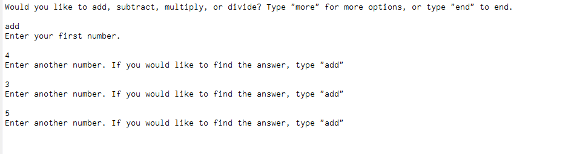
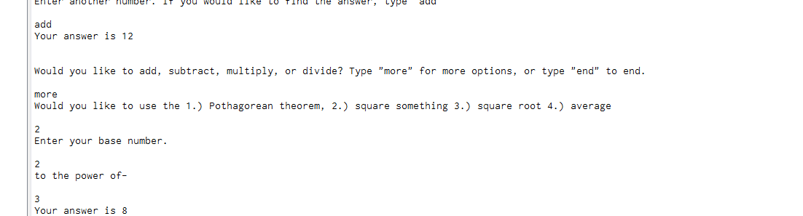
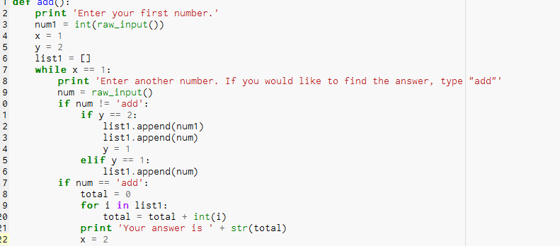

Python Project
Description
Our group decided to make a calculator that will ask what the user wants to do, then take its inputs and comes out with a solution. The calculator will be able to multiply, divide, add, subtract as well as other basic mathematical formulas. These other formulas could include functions that use the Pythagorean Theorem or Newtons Laws. We will also attempt to take in more than two inputs from the user instead of just two. The calculator will have multiple steps and ask very specifically what the user wants to do. The calculator will be very intuitive with no confusing steps.
Lukes Reflection
We wanted to created a simple calculator, and in that aspect I believe that our group met our goal. We were actually able to complete the four major functions fairly quickly, so the add on are what took the most time. We really wanted to make a calculator with a GUI that included all our equations, but we couldnt find a way to do it without using someone elses code, and we didnt even know how their code worked. If we were to do this project again then we would probably research calculator GUIs more and incorporate that.
Here is a linkGoogle

This picture is our program running a simple addition equation.

This picture is our program using its exponential formula.

This image of our code in the addition section. We had difficulty with this because we couldnt figure out how to add more than two numbers at a time. We fixed it by making the numbers into a list.